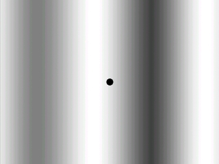

Scrolling Backgrounds

Last Updated 3/28/10
In some cases making a one large background is either wasteful or impractical. This is where smooth scrolling backgrounds come in handy.Whether you have a level that will run for an indefinite length or you're just too lazy to make a background for an entire level, scrolling backgrounds can be quite useful. This tutorial will teach you to make an endless smooth scrolling background.
A Scrolling Backgrounds tutorial with SDL 2 is now available.
With a scrolling background, you see something like this:
 While what you want will probably be a bit smoother, it's a seemingly endless background.
While what you want will probably be a bit smoother, it's a seemingly endless background.
What is actually happening is this:
 The background is blitted multiple times, and with every frame it moves over slightly.
When the background goes too far, its offset is reset.
The background is blitted multiple times, and with every frame it moves over slightly.
When the background goes too far, its offset is reset.
The program loops through this process to give the illusion of an endless background. This is the basic premise of a scrolling background.
What is actually happening is this:
The program loops through this process to give the illusion of an endless background. This is the basic premise of a scrolling background.
//The offsets of the background
int bgX = 0, bgY = 0;
Since the background is moving, we have to have variables to store its offset.
It's typically better to have all scrolling done in a separate class but eh, doing it locally in main function is less typing for me.
It's typically better to have all scrolling done in a separate class but eh, doing it locally in main function is less typing for me.
//While the user hasn't quit
while( quit == false )
{
//Start the frame timer
fps.start();
//While there's an event to handle
while( SDL_PollEvent( &event ) )
{
//If the user has Xed out the window
if( event.type == SDL_QUIT )
{
//Quit the program
quit = true;
}
}
//Scroll background
bgX -= 2;
//If the background has gone too far
if( bgX <= -background->w )
{
//Reset the offset
bgX = 0;
}
After we do our event handling in the main loop, we scroll the background over to the left.
Then we check if the background went too far to the left.
If it did we restart our scrolling animation by moving the background back.
//Show the background
apply_surface( bgX, bgY, background, screen );
apply_surface( bgX + background->w, bgY, background, screen );
//Show the dot
apply_surface( 310, 230, dot, screen );
//Update the screen
if( SDL_Flip( screen ) == -1 )
{
return 1;
}
//Cap the frame rate
if( fps.get_ticks() < 1000 / FRAMES_PER_SECOND )
{
SDL_Delay( ( 1000 / FRAMES_PER_SECOND ) - fps.get_ticks() );
}
}
Then we show our background once at its offset,
then once again right next to it and that should give us the illusion of an endless background.
Then we show the dot, update the screen, cap the frame rate and all that good stuff.
Then we show the dot, update the screen, cap the frame rate and all that good stuff.